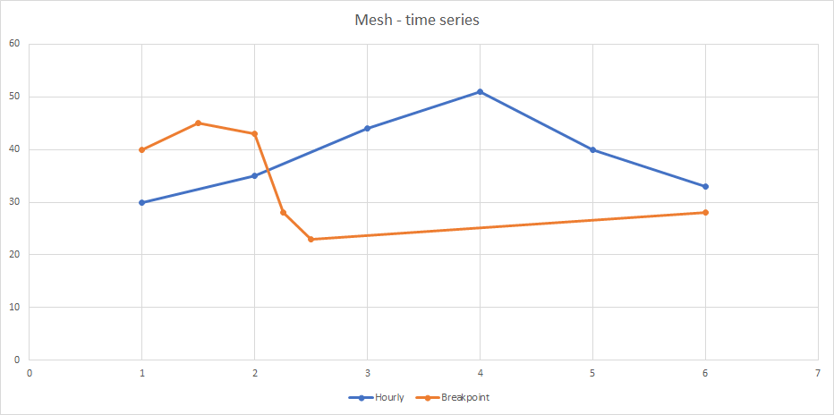

Time series¶
The primary data retrieved from the Mesh server is time series. Depending on the request, the size of this data can be quite large. A common scenario is to process this data after it has been acquired and that could mean copying or moving all the data from one library to another. This can be both time consuming and memory intensive, to alleviate these problems the Mesh Python SDK uses Apache Arrow to store the data. Several data processing libraries are now supported for this format, including numpy and pandas.
Time series data consists of:
point value - double-precision floating point
flags - 32-bit flags providing extra information like: is the point value correct or missing
timestamp - timestamp of the point (milliseconds since UNIX epoch 1970-01-01) in UTC
Besides data, time series have metadata associated with them like: curve type, unit of measurement, resolution, etc. The resolution defines time step of the time series points. Some examples are hourly or daily resolutions. Special type of resolution is breakpoint. It means there is no time step restriction and points can be provided for any timestamps.
{kind=link}